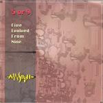

| Artist: | Ain Soph |
| Title: | 5 Or 9 |
| Label: | Poseidon/Musea PRF-030/FGBG 4631 |
| Length(s): | 59 minutes |
| Year(s) of release: | 1993/2005 |
| Month of review: | [05/2006] |
| 1) | Villa Adriana | 2.16 |
| 2) | The Two Orders Of Image | 8.21 |
| 3) | Fragments From The Pass | 1.51 |
| 4) | Ancient Museum | 9.28 |
| 5) | Seascape | 3.04 |
| 6) | The Valley Of Lutha | 9.40 |
| 7) | Shadow Picture | 10.15 |
| 8) | Little Wind | 2.31 |
| 9) | Stonehenge | 11.23 |
The Two Orders Of Image is dominated by a blaring type of synth, bringing in sufficient tempo, but failing to create a good atmosphere. The comparison to Koinonia I made for MM holds for this track as well. Fragments From The Pass is a short acoustic guitar bit, friendly enough. This holds for Little Wind too. Ancient Musuem swaps piano, fuzz guitar and some other stuff, each taking the floor for a jazz improvisation. Despite the fact that this formula has been tried out for ages (or at least decades), Ain Soph manage to include at least one very unnatural change of tempo. Still, I would say that the melodic development in the second half of the track has some progressive feel.
And just when I started hoping Ain Soph had at least admitted the cheese from this disc, we get Seascape. Okay, I guess I should have seen it coming with a title like that. This is a highly romantic sounding piece of Richard Clayderman. Ouch! Yuck! And when the cheese is out the wrapper it comes hard and fast, since it is continued into The Valley Of Lutha, with not just piano but assorted strings as well. Even in the guise of piano improvisation, the smell is too strong. Like Ancient Musuem this track suddenly changes into something else somewhere in the middle, without the band finding some sort of bridge. We now get freaky guitarring, quite odd after the opening 6 minutes. I guess somebody gobbled up the last chunk of cheese.
Shadow Picture has some bits of soloing and some melodic bits. It moves more within the regular ranges of jazzrock, making it more palatable to prog fans, without becoming the next best thing. This is yet another track that has a brief silence to see a sudden change of direction. Why didn't they simply make this into a disc with three extra tracks? Stonehenge is another bit of neurotic wiggling, moving dangerously close to the cheese (they found another chunk), failing to do more than nibble it.